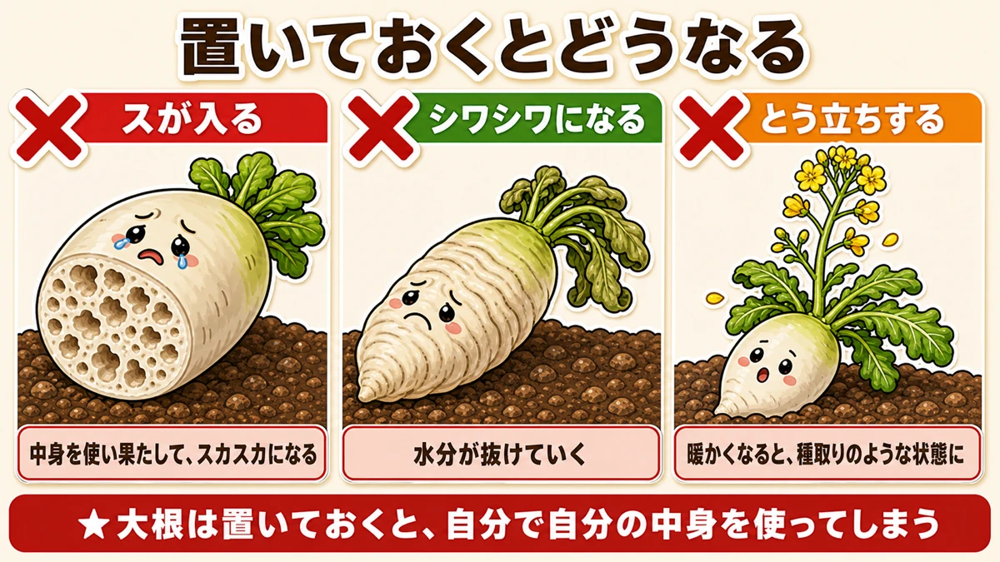
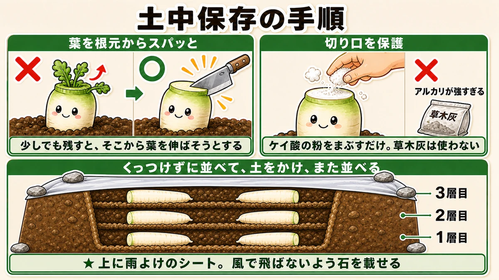
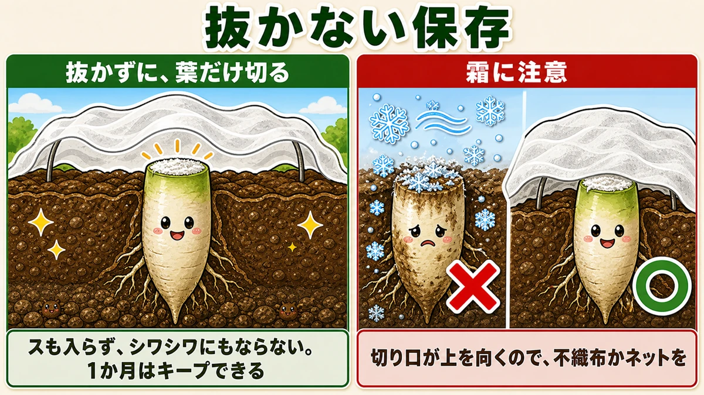
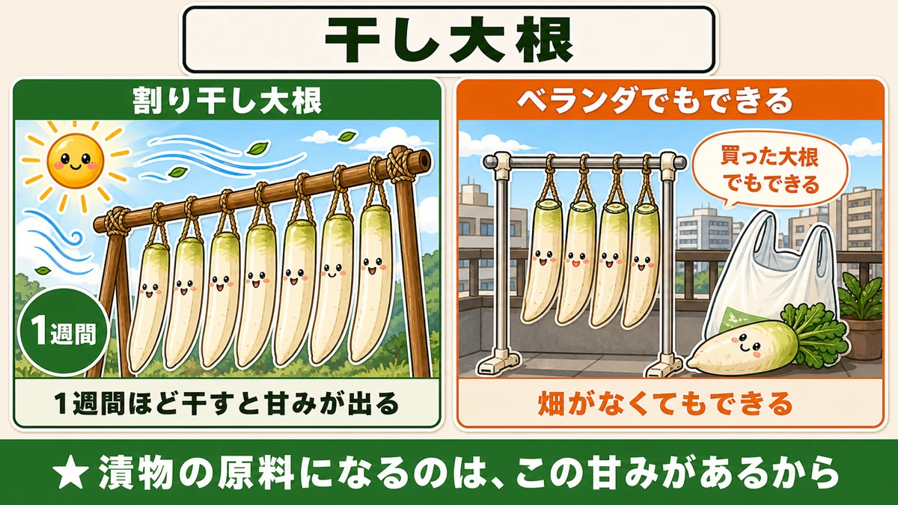
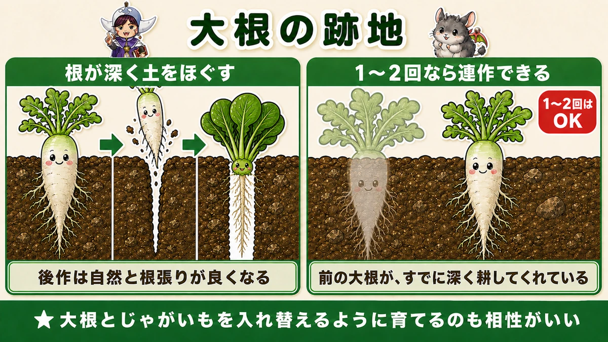
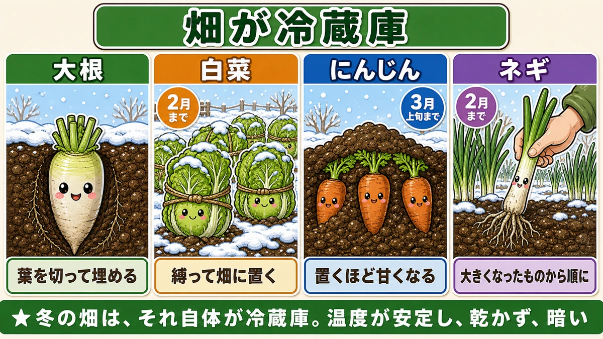

大根は畑に埋めて保存します🔵 葉を根元から切るのが全て

🗨️「大根が一気に穫れて、食べきれない」
🗨️「畑に置いておいたら、スが入っていた」
🗨️「冷蔵庫に大根5本は無理…」
どうも、8150（えいこう）です🌱 家庭菜園歴8年、理科の教員免許を持っていて、有機・無農薬で野菜を育てています。
今回は、穫ったあとの話です。
先に、この記事でいちばん言いたいことを言っておきますね。
大根は、畑に埋めて保存できます。そのとき、葉を根元からスパッと切るのが全てです。
前回まで「いつ穫るか」の話をしてきましたが、家庭菜園の本当の悩みは、そのあとに来ます。
一度に10本穫れて、家族3人。食べきれません。冷蔵庫に入れようにも、大根は場所を取ります。
そこで畑を冷蔵庫として使う。昔からある方法で、道具もほとんど要りません☺️
📖 この記事の目次
置いておくと、大根は自分で悪くなります

まず、なぜ保存が必要なのかという話から。
「まだ食べないから、畑に置いておこう」
これ、私も最初はやっていました。でも、うまくいきません。
何が起きるか
★葉が枯れるまで畑に置いておくと、スが入ります。
スというのは、大根の中に細かい空洞ができて、スカスカになる状態のことです。こうなると食感も味も落ちます。
そして★表面がシワシワになります。水分が抜けていくからですね。
さらに暖かい時期になると、★菜の花が咲いて、種取りのような状態になってしまいます。こうなるともう食べられません。
つまり、こういうことです
大根は畑に置いておけば保つ、のではありません。
★置いておくと、大根は自分で自分の中身を使ってしまう。
だから「置いておく」のではなく「保存する」必要がある。ここが出発点です。
★土中保存 ー 天然の冷蔵庫

いちばん確実で、いちばん長持ちする方法です。
手順①：葉を根元からスパッと切る
ここが全てです。
★スーパーの大根のような切り方では、甘いです。
売っている大根は、葉を少し残した状態で切ってありますよね。あれでは不十分。
★葉の付け根から一気に、一刀両断してください。
よく切れる包丁で、迷わずスパッと。ちょっと残ってしまったら、もう一度切り直します。
なぜそこまでするのか。
★葉が伸びてくる隙を、与えないためです。
少しでも葉の付け根が残っていると、大根はそこから葉を伸ばそうとします。そして伸ばす材料は、根にためた養分。つまり自分の中身を使ってしまう。
★切ってしまえば、成長のエネルギーが大根の中に閉じ込められます。
出口をふさぐ、というイメージですね。
手順②：切り口を保護する
切ったまま埋めてはいけません。
★切り口から雑菌が入ります。
生傷のまま土に埋めるようなものなので、当然といえば当然です。
そこで使うのが、ケイ酸（シリカ）の粉です。じゃがいもの切り口に使うものとして売られていますが、大根にも使えます。
★切り口にまぶすだけ。
これで切り口が守られます。天然の鉱物が原料で、水分を吸着して腐敗を抑えてくれます。
★草木灰は使わないでください
「灰でもいいのでは」と思われるかもしれませんが、ここは注意が必要です。
★草木灰はアルカリが強すぎます。
アルカリなので殺菌はできるのですが、強すぎる。特にじゃがいもに使うと、★そうか病の原因になることがあります。じゃがいもはアルカリを嫌う野菜だからですね。
大根の切り口保護には、ケイ酸の粉のほうが安心です。
手順③：層にして埋める
ここからは簡単です。
- ★大根が収まるサイズの穴を掘る
- ★大根同士がなるべくくっつかないように並べる
- 土をかける
- ★またその上に大根を並べて、土をかける
これを2層、3層と重ねていきます。曲がった大根でも、割れた大根でも構いません。
手順④：雨よけをする
最後に、★上にシートをかけて雨よけをします。
風で飛ばないように、石などを載せておいてください。
これで完成です。★天然の冷蔵庫のできあがり。かなり長い間、新鮮なまま保存できます。
抜かない保存 ー もっと手軽な方法

「掘り起こすのが面倒」という方には、こちらもあります。
土中保存より保存期間は短いのですが、★掘る手間がまったくいりません。
やり方
- ★大根を抜かずに、葉だけを切り落とす（切り方は土中保存と同じ）
- ★切り口にケイ酸の粉をまぶす
- ★周りの雑草を抜いておく
これだけです。
★スが入ったり、シワシワになったり、傷んだりしません。余裕で1か月くらいはキープできます。
★1つだけ注意
★霜に当たると傷みます。
葉を切ってしまうと、切り口が上を向いた状態で寒さにさらされます。
★不織布やネットを、ふんわりかけておいてください。それだけで違います。
干して甘くする

もうひとつ、昔からある方法です。
★大根は、干すと甘みが出ます。
漬物の原料になるのは、この甘みがあるからですね。
ベランダでもできます
畑がなくてもできる方法です。
★割り干し大根なら、1週間ほど干すだけ。
縦に細く割って、風通しのいいところに吊るしておく。それだけで甘くなります。
そして面白いのが、★スーパーで買った大根でも同じようにできること。
穫れすぎた年でなくても試せるので、一度やってみると「干すとこんなに変わるのか」と驚きます。
★大根の跡地は、次がよく育ちます

穫ったあとの話をもうひとつ。これは得な話です。
★大根は、根が深く伸びて土をほぐしてくれます。
太い根が地中深くまで入っていくので、抜いたあとには縦の道ができる。★後作は自然と根張りが良くなります。
しかも、大根は1〜2回なら連作できます
これは意外に思われるかもしれません。
理由は、いま書いたことの裏返しです。
大根栽培は、土を深く耕す必要があります。★でも前の大根が、すでに深く耕してくれている。
だから軽く耕すだけで、次の大根が作れる。★1〜2回なら連作できるというのは、そういうことです。
「連作障害が怖くて場所を空けている」という方は、大根に関しては少し気楽に考えていいと思います。
じゃがいもと入れ替えるという手
私が聞いていいなと思ったのが、★大根とじゃがいもを入れ替えるように育てるやり方です。
どちらも土を深く使う野菜なので、相性がいい。
ちなみに、じゃがいもの取り残しが、翌年の大根と一緒に育ってしまうこともあるそうです。大根を掘ったら小さいじゃがいもがコロコロ出てくる。おまけみたいなものですね😊
ほかの野菜も、畑が冷蔵庫になります

大根だけではありません。冬野菜には、共通の考え方があります。
白菜
★外葉で全体を包んで、紐で縛る。
これで2月ごろまで畑に置けます。必要なときに1個ずつ穫る。
にんじん
★12月に土をかけておく。
3月上旬まで畑で持ちます。しかも寒さに当たり続けるので、★置くほど甘くなります。
ネギ
★大きくなったものから順に穫る。
2月ごろまで穫れます。抜かずに置いておけば、それが保存になっています。
つまり
★冬の畑は、それ自体が冷蔵庫です。
温度が安定していて、湿度も保たれる。しかも電気代がかかりません。
「収穫したら全部持って帰る」ではなく、「必要なときに必要なだけ穫る」。冬野菜のいちばん贅沢な食べ方だと思っています。
学ぶ：なぜ葉を切ると、中身が減らないのか🔬
理科の時間です。ここが分かると、「根元からスパッと」の意味が腑に落ちます。
大根の食べる部分は、根です。そして根は、★貯蔵器官です。
葉が光合成で作った糖やデンプンを、せっせと運び込んで貯めこんだもの。それが、あの白い部分の正体です。
葉が生きていると、引き出しが開いたまま
さて、葉がついたままだとどうなるか。
葉は生き続けようとします。新しい葉を伸ばそうとします。
そのとき使うのは、★根に貯めておいた養分です。
つまり、貯金を引き出して使ってしまう。★スが入るというのは、中身を使い果たして空洞になった状態なんですね。
★葉を切るというのは、引き出しにカギをかけることです。
エネルギーの出口をふさげば、中身は減りません。
とう立ちも、同じ話
暖かくなると、大根は花茎を伸ばして花を咲かせます。とう立ちですね。
★このときも、根の貯金を全部使います。
だから春の大根はスが入りやすい。「収穫が遅れると味が落ちる」の正体は、これです。
★大根にとって、あの白い部分は「次の世代のための貯金」なんです。それを横取りして食べている、ということになりますね。
なぜ土の中が保存に向くのか
もうひとつ。冷蔵庫がやっていることを考えてみてください。
- 温度を低く、一定に保つ
- 乾燥しないようにする
- 暗くしておく
★土の中は、この3つを全部やっています。
地中は地上より温度変化が小さい。土は水分を含んでいるので乾かない。そして当然、真っ暗です。
★冷蔵庫と同じことを、土がタダでやってくれている。だから「天然の冷蔵庫」なんですね。
お子さんと一緒なら
これ以上ない実験があります。
★葉を根元から切った大根と、葉を少し残した大根を、同じ日に同じ場所に埋める。
1か月後に掘り出して、両方を縦に切ってみてください。
葉を残したほうは、★中がスカスカになっています。切ったほうは、みずみずしいまま。
「使う出口があるかどうか」で、こんなに変わる。目の前ではっきり差が出ます🔵
まとめ
ここまで読んでくださって、ありがとうございます！
穫ったあとにも、やれることがあります。ポイントを整理しておきますね。
- ★置いておくと大根は自分の中身を使ってスカスカになる。だから「保存する」
- ★★葉は根元からスパッと一刀両断。スーパーの切り方では甘い。葉が伸びる隙を与えない
- ★切り口にケイ酸の粉をまぶす。★草木灰はアルカリが強すぎるので使わない
- 大根同士をくっつけず、層にして埋める。上に雨よけのシート
- 手軽にやるなら「抜かない保存」。葉を切って切り口を保護して雑草を抜く。★霜よけに不織布を
- ★大根の跡地は根張りが良くなる。しかも★1〜2回なら連作できる
- 白菜は縛って2月まで、にんじんは土をかけて3月まで。★冬の畑は冷蔵庫
全部やろうとしなくて大丈夫です。今度大根を穫るとき、1本だけ葉を根元からスパッと切って、そのまま畑に戻してみてください。1か月後に掘れば、違いが分かります🔵
次回は毎月の定期便、1月号です。ほとんどの人が畑を休む1月に、実は始められることをまとめます🌱
ケイ酸（シリカ）の粉
切り口に付けておくと、そこから傷むのを防げます。じゃがいもの切り口にも同じものが使えるので、1袋あると冬から春まで出番があります。草木灰は逆にアルカリになるので、使わないでください。
![[商品価格に関しましては、リンクが作成された時点と現時点で情報が変更されている場合がございます。]](https://hbb.afl.rakuten.co.jp/hgb/565b74ce.f30a48e7.565b74cf.8a827250/?me_id=1368676&item_id=10000491&pc=https%3A%2F%2Fthumbnail.image.rakuten.co.jp%2F%400_mall%2Farakawaseed%2Fcabinet%2Fcompass1582111506.jpg%3F_ex%3D240x240&s=240x240&t=picttext "[商品価格に関しましては、リンクが作成された時点と現時点で情報が変更されている場合がございます。]")

不織布
埋めない大根には、上から1枚かけておきます。霜で葉先が傷むのを防げます。畑にそのまま置いておく保存なら、これだけで年明けまでもちます。
![[商品価格に関しましては、リンクが作成された時点と現時点で情報が変更されている場合がございます。]](https://hbb.afl.rakuten.co.jp/hgb/56bc237a.e97551b1.56bc237b.2513ed10/?me_id=1310260&item_id=10000879&pc=https%3A%2F%2Fthumbnail.image.rakuten.co.jp%2F%400_mall%2Fdiokasei%2Fcabinet%2F007fusyokufu%2F12g%2Fimgrc0092049705.jpg%3F_ex%3D240x240&s=240x240&t=picttext "[商品価格に関しましては、リンクが作成された時点と現時点で情報が変更されている場合がございます。]")
収穫ハサミ
葉を根元からスパッと切るための道具です。中途半端に残すと、大根が自分の中身を使ってスカスカになる。一刀両断できる切れ味のものを選んでください。
![[商品価格に関しましては、リンクが作成された時点と現時点で情報が変更されている場合がございます。]](https://hbb.afl.rakuten.co.jp/hgb/56d22030.def85fa7.56d22031.b89fde86/?me_id=1250472&item_id=10022339&pc=https%3A%2F%2Fthumbnail.image.rakuten.co.jp%2F%400_mall%2Fplantz%2Fcabinet%2F01%2Ft-13.jpg%3F_ex%3D240x240&s=240x240&t=picttext "[商品価格に関しましては、リンクが作成された時点と現時点で情報が変更されている場合がございます。]")
あわせて読みたい